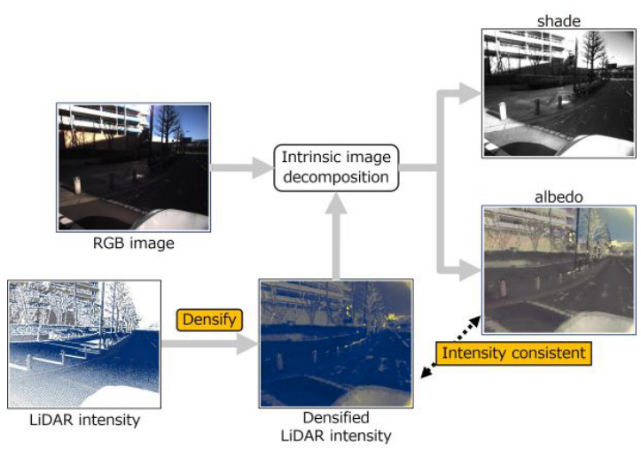
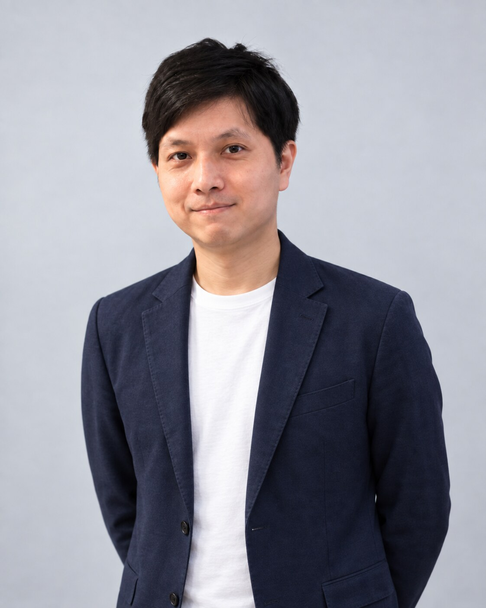

Unsupervised Intrinsic Image Decomposition with LiDAR Intensity
IEEE/CVF Conference on Computer Vision and Pattern Recognition (CVPR), 2023
PaperResearcher, NTT Human Informatics Laboratories
Visiting Researcher, Waseda University
Shogo Sato received his Ph.D. from Waseda University, Japan, in 2025. He is currently a Researcher at NTT Human Informatics Laboratories and a Visiting Researcher at Waseda University. His research interests include radiation imaging and 3D computer vision.


IEEE/CVF Conference on Computer Vision and Pattern Recognition (CVPR), 2023
PaperApplied Physics Letters, 124, 253702 (2024)
PaperThe Astrophysical Journal, 999(2), 231 (2026)
PaperThe Astrophysical Journal, 913(2), 83 (2021)
PaperIEEE/CVF Winter Conference on Applications of Computer Vision (WACV), 2026
PaperIEEE/CVF Winter Conference on Applications of Computer Vision (WACV), 2025
Paper